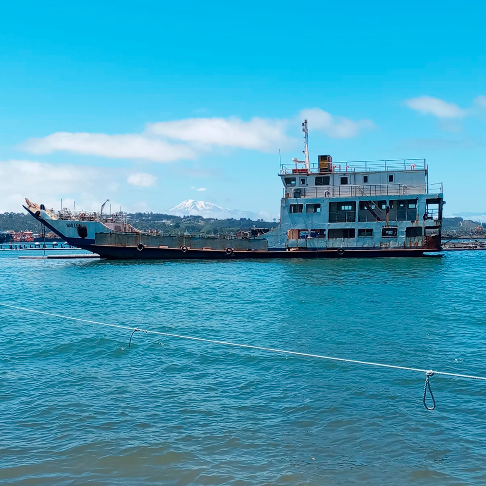
Blaue Meer LTDA. Es una empresa chilena compuesta por un equipo multidisciplinario ligado al ámbito marítimo, de navegación, científico y ambiental del más alto nivel, en una cohesión profesional que hemos denominado "Eco-Oceanografía Industrial". Esta sería la aplicación de la oceanografía y ciencias relacionadas para la solución de problemáticas económicas y ecológicas del ámbito marítimo (portuario, industrial, pesquero y de defensa), mediante el desarrollo y ejecución de procesos tecnológicos y/o industriales innovadores y sostenibles.
Desde estudios y modelaciones oceanográficas de ultra alta resolución para manejo costero y bahías, pasando por estudios y modelaciones ecosistémicos y biogeoquímicos, asesorías en estabilidad y maniobras, servicios marítimos como reflotamientos, desvaramientos y desguaces de naves y artefactos; hasta servicios submarinos especializados prestados por un equipo de ex buzos tácticos de la Armada de Chile, Blaue Meer busca otorgar soluciones razonables, eficientes, sostenibles y amigables con el medio ambiente.
Nuestro equipo científico proviene de la prestigiosa Universidad de Concepción y mantiene importantes nexos con comunidades científicas internacionales.
El desguace de embarcaciones se encuentra entre las cinco profesiones más peligrosas según la Organización Internacional del Trabajo (OIT). Siendo necesario de este modo, cumplir con una serie de desafíos que deben abordarse adecuadamente para garantizar un proceso seguro y eficiente.
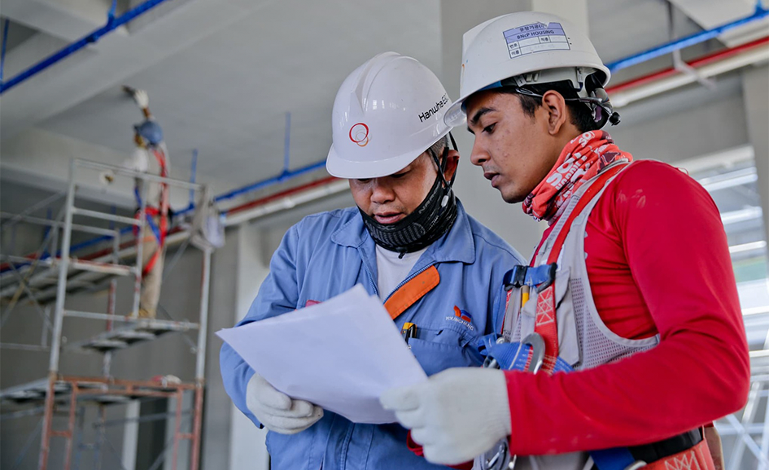
Prevención de riesgos
El desmantelamiento de un barco puede ser peligroso debido a la presencia de equipos y sistemas complejos, sumado a la posible presencia de materiales y residuos peligrosos.
Es importante tomar medidas de seguridad adecuadas para proteger a los/las trabajadores y minimizar el riesgo de accidentes, garantizando así un proceso seguro y eficiente.
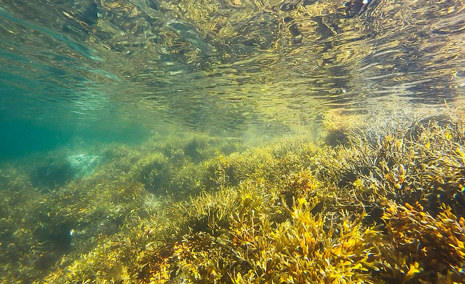
Oceanográfia y ecosistemas
El desguace de embarcaciones puede tener un impacto ambiental negativo si no se gestiona adecuadamente.
Es importante que se sigan todas las regulaciones y normativas ambientales aplicables para minimizar el impacto en el medio ambiente y proteger la salud humana, tanto de trabajadores como de comunidades aledañas.
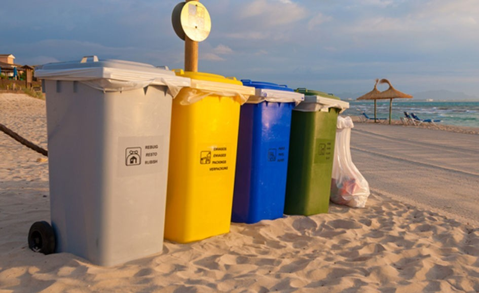
Reducción en la emisión de CO2
Un desafío importante del desguace es el reciclaje de los materiales y componentes que se retiran de una embarcación.
Es importante asegurarse de que se utilicen métodos de reciclaje adecuados, certificados y con determinación final. Asegurando así, la maximización en la cantidad de materiales reciclados minimizando el impacto ambiental.
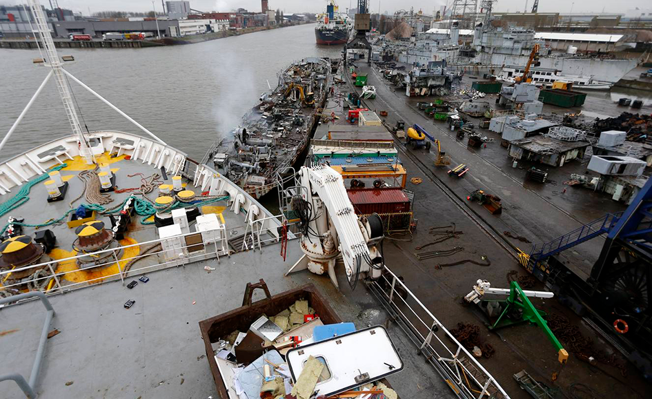
Innovación y cuidado ambiental
El desguace de barcos puede ser un proceso costoso debido a la complejidad del trabajo y a la necesidad de seguir regulaciones y normativas específicas.
Es de real importancia planificar adecuadamente los procesos para minimizar los costos y maximizar la eficiencia, garantizando así un proceso sostenible.
Como empresa comprendemos lo crucial que es seguir todas las normativas y regulaciones aplicables, nacionales e internacionales, y garantizar la seguridad tanto de trabajadores como del medio ambiente durante nuestros trabajos.
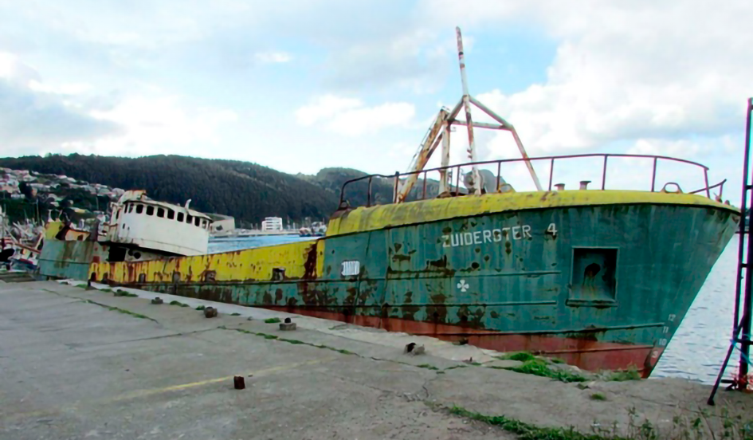
Trabajo realizado entre septiembre de 2014 y febrero de 2015. Su realización y cumplimiento total de faenas, cuentan con la certificación de la Armada de Chile.
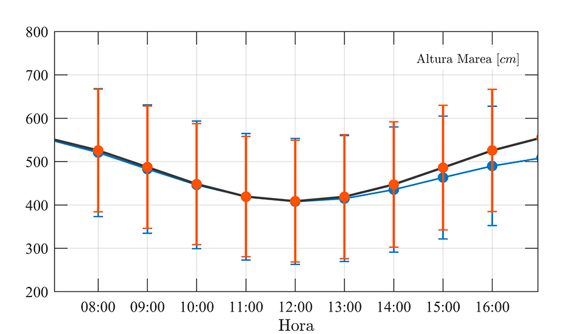
El Departamento Ecosocio-Oceanográfico de Blaue Meer, cuenta con personal especializado en análisis e identificación de procesos oceanográficos con sentido ecosistémico
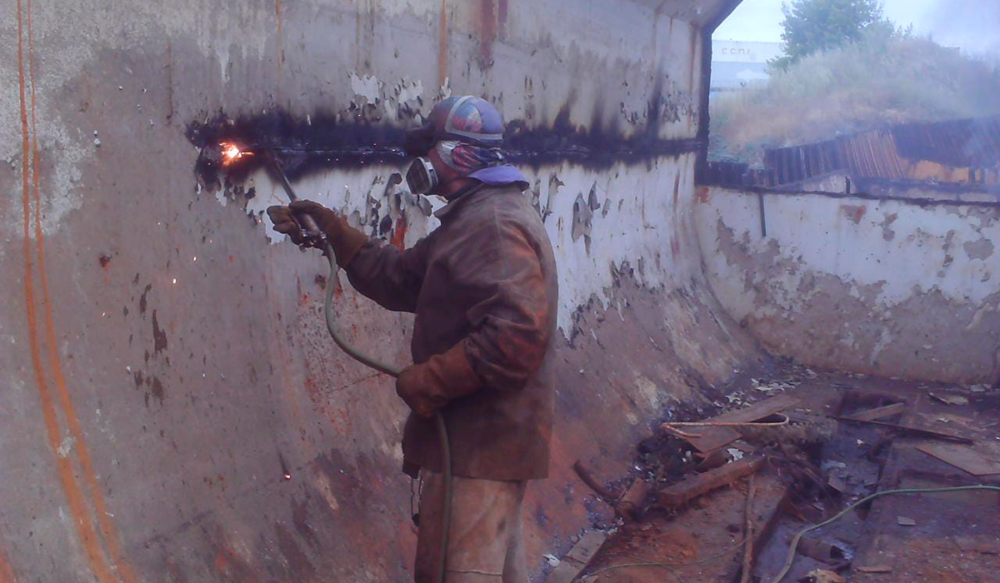
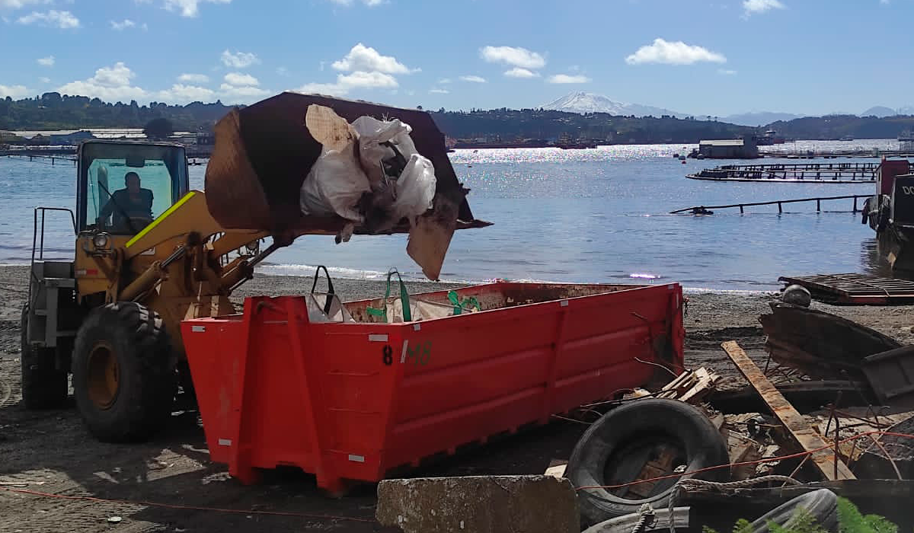
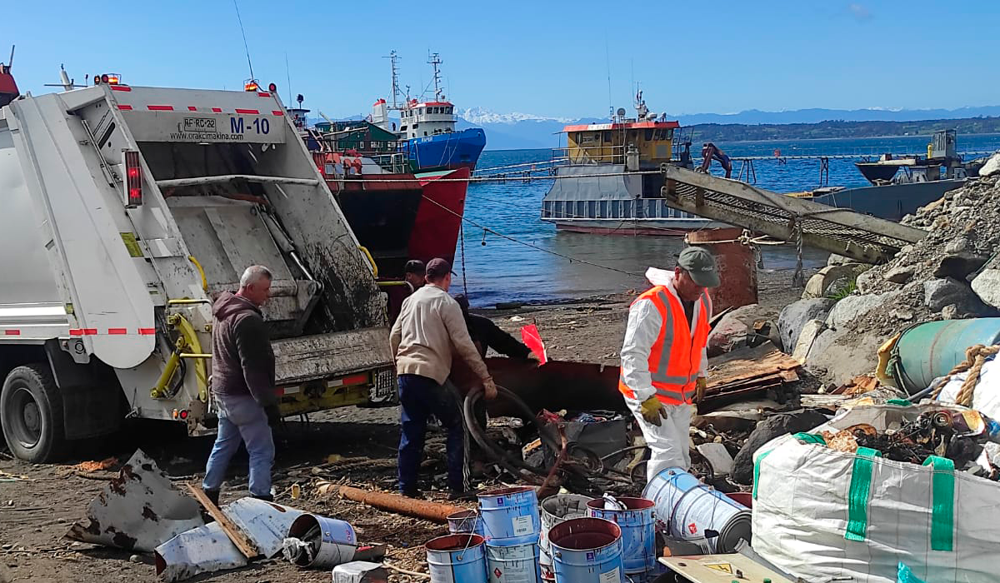
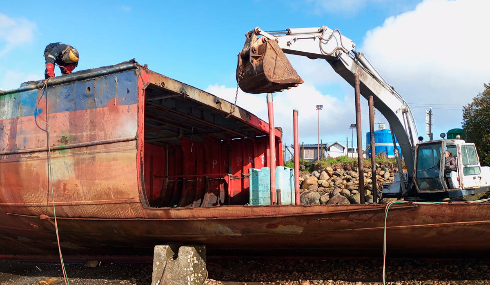
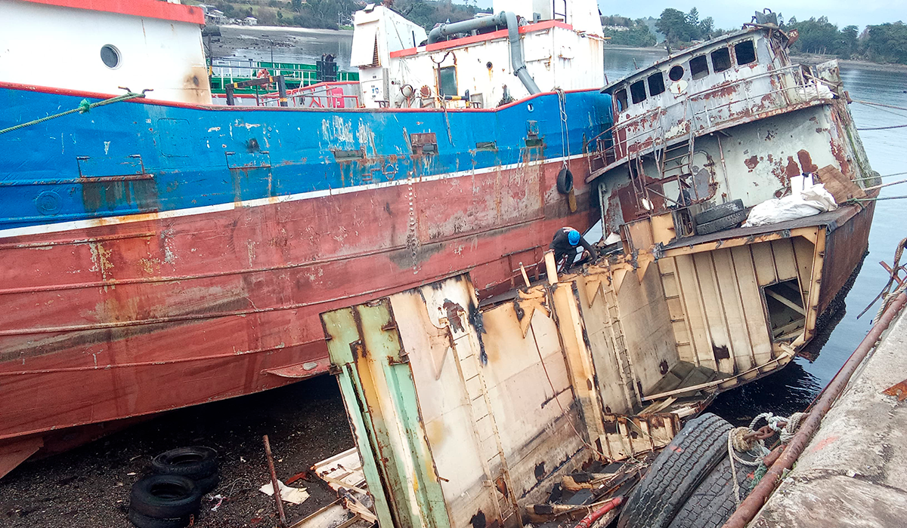
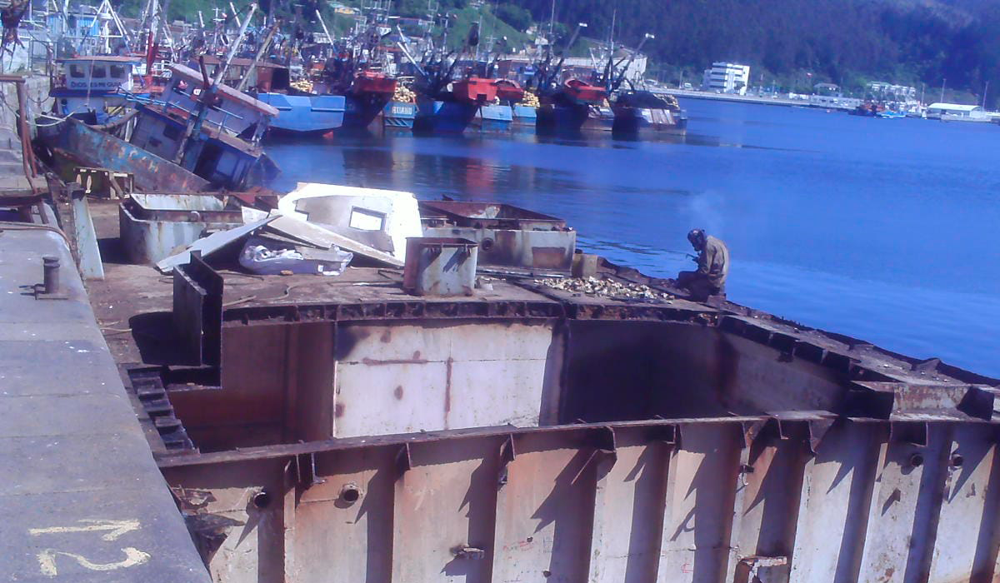
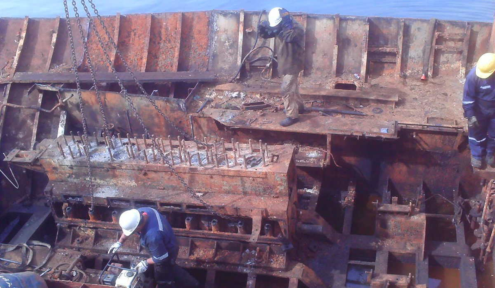
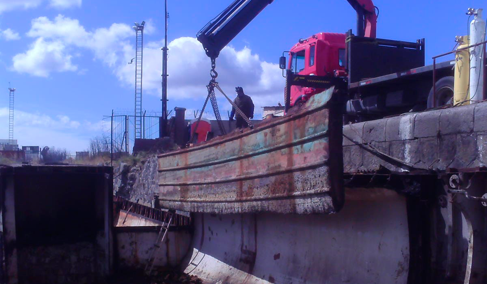